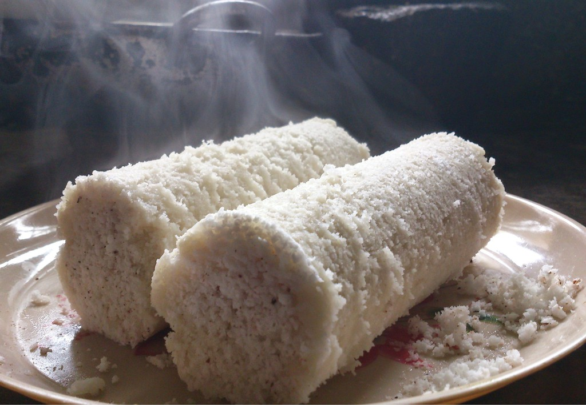
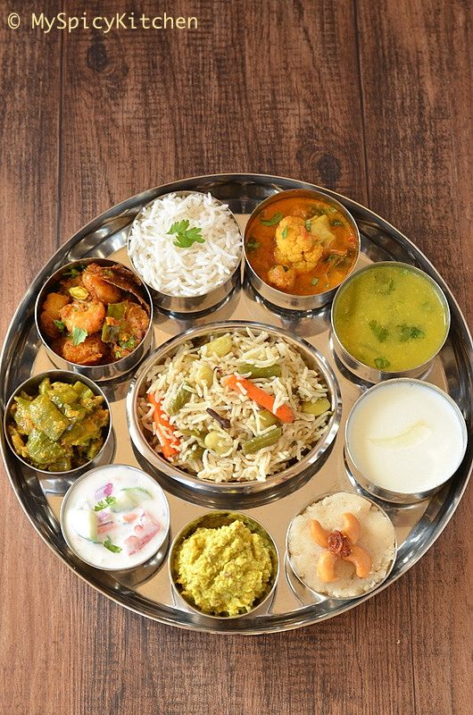
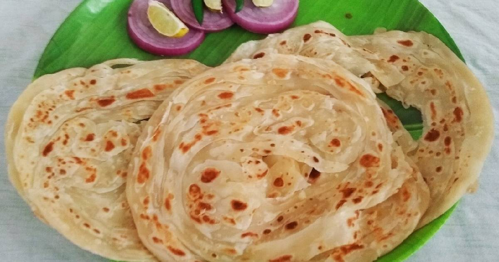
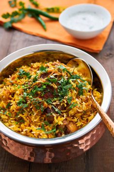

Puttu

This is the popular breakfast all round the Kerala.Made primarly of Rice Powder
It also has ingredients such as cornpowder, wheat and ragi
Chief Component in this is Grated Coconuts,which lends a soft and juicy texture to dish.
PUTTU
Idly

This is the best place to have a good breakfast in Vijayawada.
Breakfasts are too delicious here, Espically Ghee Idly
They just pore pure gee over idly , which makes the idly too delicious.
BABAI
HOTEL
Thali

Hotel Murugan in Guntur, this place is synonymous with delicious food
that can satiate all food cravings.
It is said to be home to some of the most appreciated cuisines
This Hotel is famous VEG and NON-VEG Thali,So anyone can visit it
MURUGAN HOTEL
Parrota

A sensational eatery famous for its soft parotas, tasty sukka, karidosa, kolambu parota and the ever
tasty milagu
kulambu, arumugam kadai is a regular eat out for me.
Its open only for dinner
Its more ideal for a bunch of friends to hog together and eat to glory.
AMURGAM
HOTEL
Dindigul Biryani

This is the best place for Biryani Lovers
Especially for Non-vegetarians
THALAPPAKATTI RESTAURANT